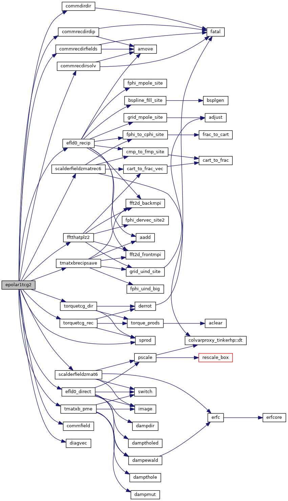
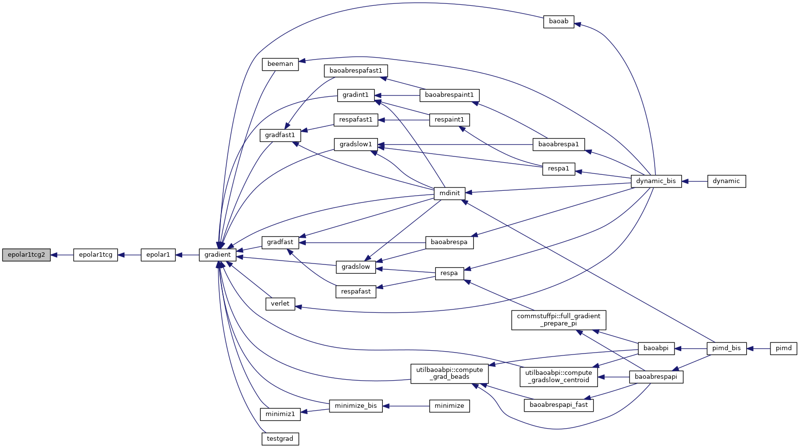
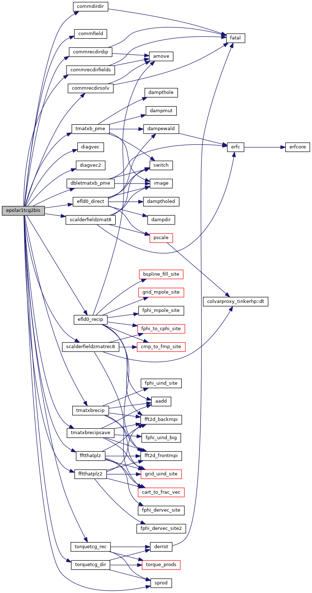
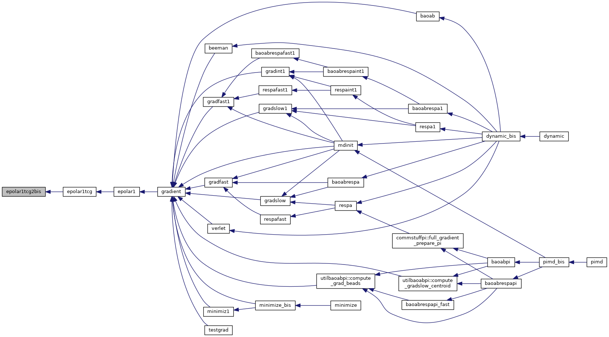
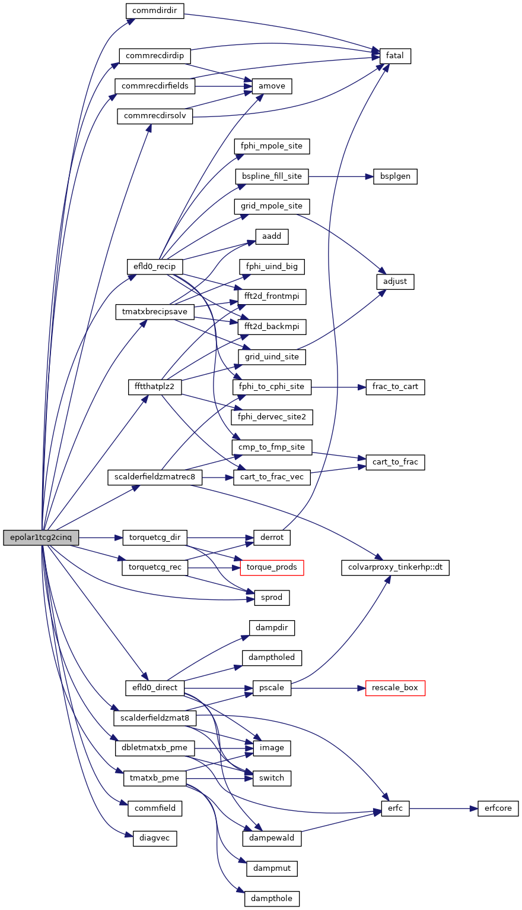
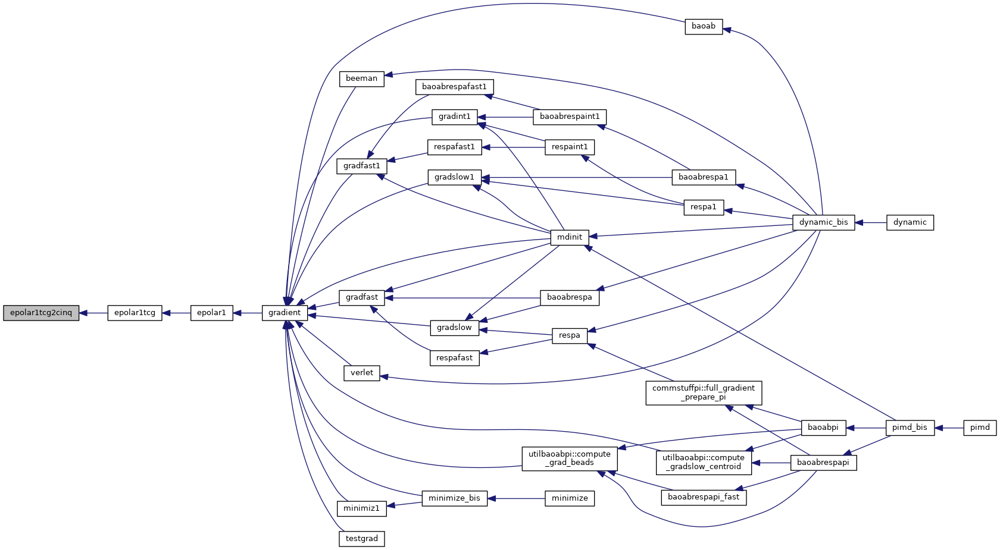
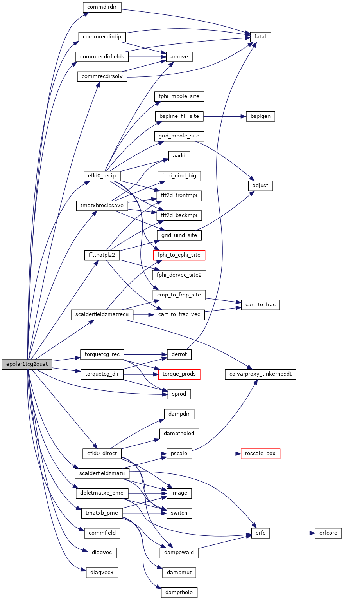
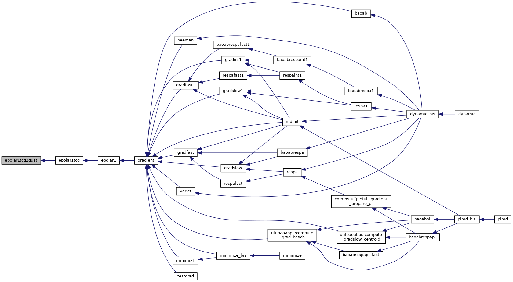
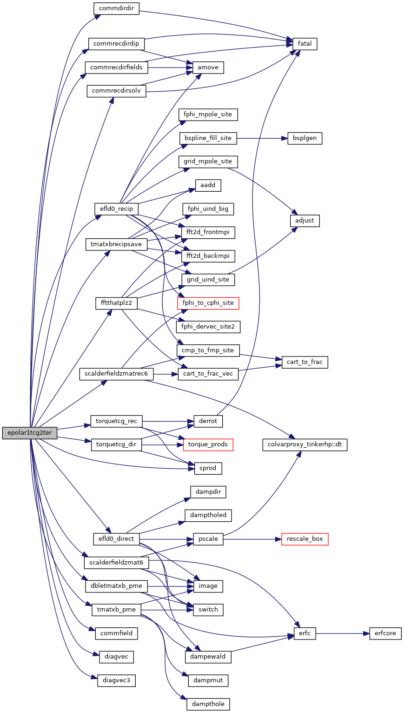

|
Tinker-HP v1.3
|
|
Tinker-HP v1.3
|
Go to the source code of this file.
Functions/Subroutines | |
| subroutine | epolar1tcg2 |
| subroutine | epolar1tcg2bis |
| subroutine | epolar1tcg2ter |
| subroutine | epolar1tcg2quat |
| subroutine | epolar1tcg2cinq |
| subroutine epolar1tcg2 | ( | ) |
Definition at line 16 of file epolar1tcg2.f90.
References commdirdir(), commfield(), commrecdirdip(), commrecdirfields(), commrecdirsolv(), diagvec(), efld0_direct(), efld0_recip(), fftthatplz2(), scalderfieldzmat6(), scalderfieldzmatrec6(), sprod(), tmatxb_pme(), tmatxbrecipsave(), torquetcg_dir(), and torquetcg_rec().
Referenced by epolar1tcg().


| subroutine epolar1tcg2bis | ( | ) |
Definition at line 498 of file epolar1tcg2.f90.
References commdirdir(), commfield(), commrecdirdip(), commrecdirfields(), commrecdirsolv(), dbletmatxb_pme(), diagvec(), diagvec2(), efld0_direct(), efld0_recip(), fftthatplz(), fftthatplz2(), scalderfieldzmat8(), scalderfieldzmatrec8(), sprod(), tmatxb_pme(), tmatxbrecip(), tmatxbrecipsave(), torquetcg_dir(), and torquetcg_rec().
Referenced by epolar1tcg().


| subroutine epolar1tcg2cinq | ( | ) |
Definition at line 2807 of file epolar1tcg2.f90.
References commdirdir(), commfield(), commrecdirdip(), commrecdirfields(), commrecdirsolv(), dbletmatxb_pme(), diagvec(), efld0_direct(), efld0_recip(), fftthatplz2(), scalderfieldzmat8(), scalderfieldzmatrec8(), sprod(), tmatxb_pme(), tmatxbrecipsave(), torquetcg_dir(), and torquetcg_rec().
Referenced by epolar1tcg().


| subroutine epolar1tcg2quat | ( | ) |
Definition at line 1993 of file epolar1tcg2.f90.
References commdirdir(), commfield(), commrecdirdip(), commrecdirfields(), commrecdirsolv(), dbletmatxb_pme(), diagvec(), diagvec3(), efld0_direct(), efld0_recip(), fftthatplz2(), scalderfieldzmat8(), scalderfieldzmatrec8(), sprod(), tmatxb_pme(), tmatxbrecipsave(), torquetcg_dir(), and torquetcg_rec().
Referenced by epolar1tcg().


| subroutine epolar1tcg2ter | ( | ) |
Definition at line 1132 of file epolar1tcg2.f90.
References commdirdir(), commfield(), commrecdirdip(), commrecdirfields(), commrecdirsolv(), dbletmatxb_pme(), diagvec(), diagvec3(), efld0_direct(), efld0_recip(), fftthatplz2(), scalderfieldzmat6(), scalderfieldzmatrec6(), sprod(), tmatxb_pme(), tmatxbrecipsave(), torquetcg_dir(), and torquetcg_rec().
Referenced by epolar1tcg().

 1.8.5
1.8.5